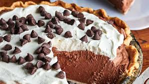
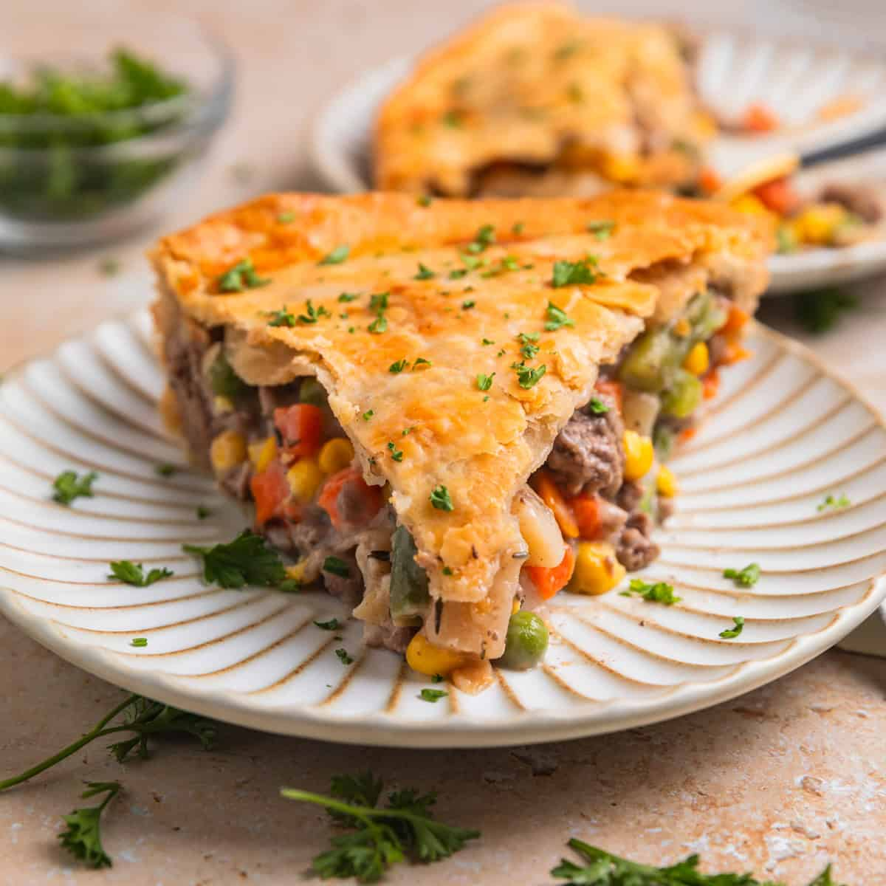
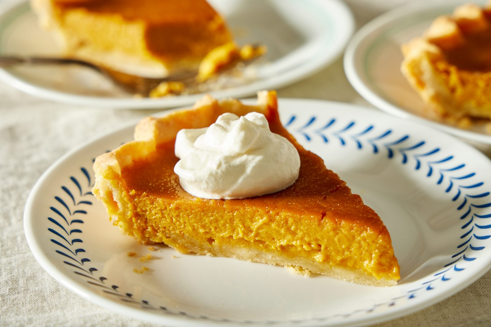
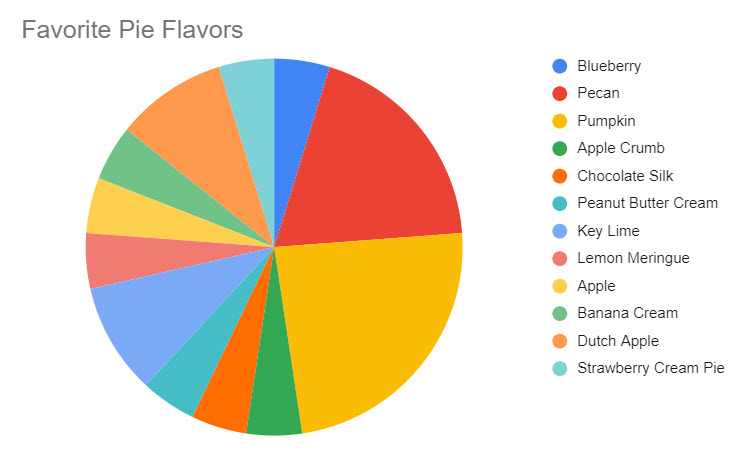
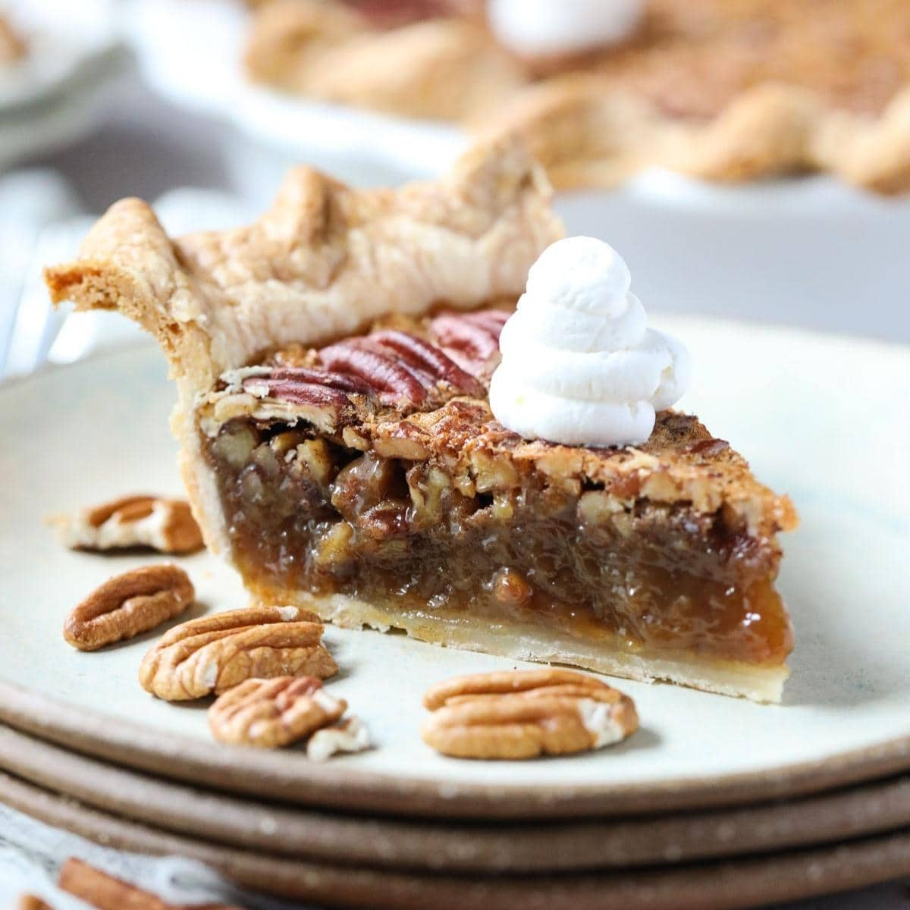

#10: Chocolate Cream Pie
This is an alright pie, and would be an interesting surprise if you were
to bring one to a party. I just feel like it's too sweet and "pastry-like"
for my taste, although, I'd still enjoy a slice from time to time.

#9: Key Lime Pie
Soild pie. Very rich and creamy in it's flavor. Only if you can get behind
that lime taste. I think its quite pleasant, but I understand where people are
coming from when they say they don't like it. Not the best choice for the Holidays.
#8: Lemon Meringue Pie
Slightly better choice for a Holiday party than the Key Lime. The flavor is more
pronounced too! And more tart! If you don't like tart pies, then this won't be your
thing, unfortunately.
#7: Cherry Pie
A classic pie! Rich and gooey, the chery flavor hits like a punch. A good o'l,
reliable flavor. You won't go wrong bringing this pie to a party. But, the point still
stands: there are better options to choose from.
#6: Blueberry Pie
Another classic pick! Dark in color and super sweet. That blueberry taste just makes
for a better holiday pie then the cherry. Just make sure to be careful while eating it.
Those dark blue-purple blueberry stains on your holiday clothes will not make for a good
end to the year.
#5: Beef Pot Pie
Not a sweet fruit pie, but a savory pie instead! Makes for a great addition to
your New Years and Christmas dinners. The beef is saucy and flavorful, and
vegetables with pie crust make an amazing flavor profile.

#4: Pumpkin Pie
Pumpkin pie makes for an amazing Holiday, even past Thanksgiving.
Smooth and spiceful. Could never go wronge with it!

HONORABLE MENTION #1:
PIE CHARTS
Incredibly important and very useful for visualizing data.
Very professional indeed! Not very holiday related in most applications,
however. And not edible, to my knowledge.

HONORABLE MENTION #2:
SHEPHERD'S PIE
Not a "True" pie, since it is made with potatoes. Earns a spot
here because it's preaty good. Tasty, savory, and a hearty meal!
HONORABLE MENTION #3:
PEACAN PIE
I myself am deadly allergic to tree nuts, so I can't say I've had it
before. However, I have heard from others that it is an amazing pie when
done right! Definitely give it a try, if it doesn't kill you.

#3: Pizza Pie
I had to do it. Pizza durring the holiday goes hard. That is a fact.
Eating a warm slice on a cold winter's night, sharing time with your family.
Places 3rd on this list.
#2: Apple Pie
The humble apple pie is an absolute staple in the pie world. for most people
when they heard the word "Pie", they this of this. And for good reason too!
Crispy, scrumcious, flavorful, and sometimes spiceful, it would be criminal
if this classic pie wasn't on the list! It places 2nd on this list.
#1: Chicken Pot Pie
I ranked this pie first last time, and it still hasn't changed.
I love this pie to bits! Creamy, savory, and delicious! If you haven't
had this pie yet, you NEED to try it one day. Especially if you are a
big fan of chicken. Share it with family during Holiday gatherings, and if it's
a good one, they are sure to love it!